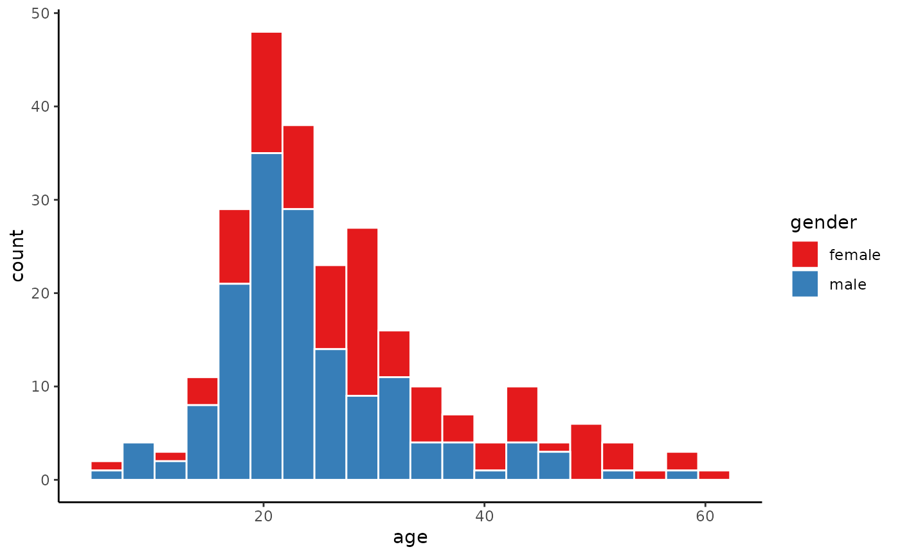
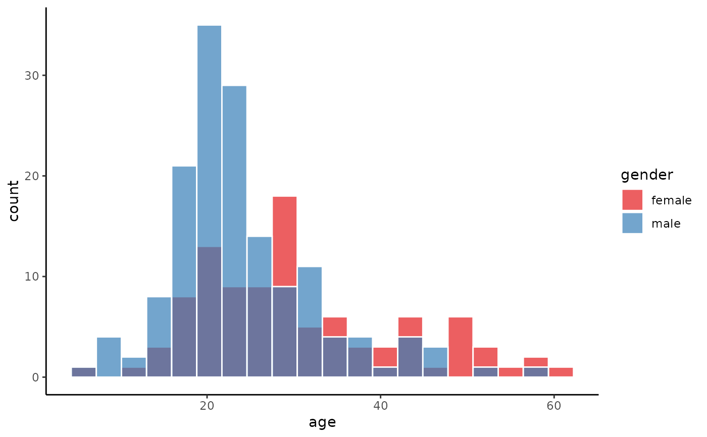
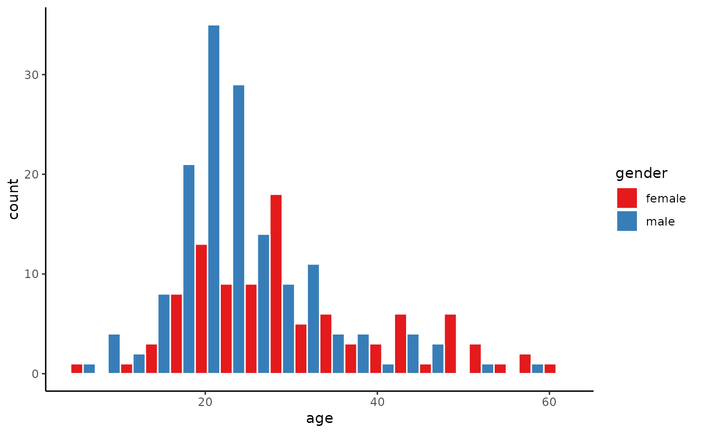
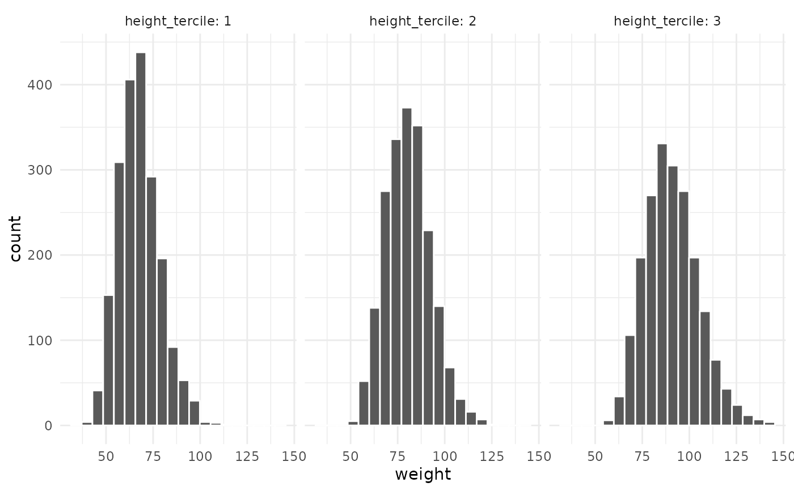
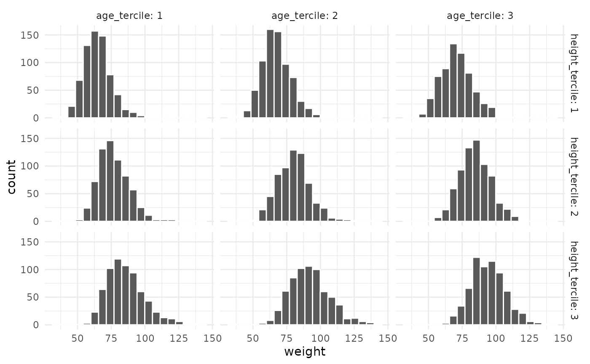

histogram.RdThis is a wrapper to the typical ggplot based histogram, i.e., using
geom_histogram. A continuous variable, x, is required as an input.
Optionally, a by categorical variable can be provided.
histogram(
x,
data,
by = NULL,
position = "stack",
facet = NULL,
facet_type = "wrap",
bins = 10,
alpha = 1,
xlab = NULL,
ylab = NULL
)The numeric variable that is to be histogrammed.
A data frame with at least one numeric variable (the x
variable).
A categorical variable by which to group the x values. If
provided there will be one histogram for each set of x values grouped by
the values of the by variable.
If the by variable is provided, there are three ways these
multiple histograms can be positioned: stacked (position = 'stack'), side
by side (position = 'dodge'), superimposed (position = identity').
A character string or character vector. If provided, we
facet_wrap (by default) the histogram by the variables. This is
equivalent to the facet_wrap(variables) in ggplot2.
By default, this takes the value of wrap, and facet
leads to a facet wrap. If facet_type is grid, then facet gives us a
facet_grid.
The number of bins to use in the histogram.
The transparency to for the filled histogram bars. This is
probably only required when using position = 'identity'.
The label of the x-axis (defaults to the x variable name).
The label of the y-axis (defaults to the y variable name).
A ggplot2::ggplot object, which may be modified with further ggplot2
commands.
histogram(x= age, data = schizophrenia, by = gender, bins = 20)

histogram(x= age, data = schizophrenia, by = gender, position = 'identity', bins = 20, alpha = 0.7)

histogram(x= age, data = schizophrenia, by = gender, position = 'dodge', bins = 20)

histogram(x = weight, bins = 20, data = ansur, facet = height_tercile)

histogram(x = weight, bins = 20, data = ansur,
facet = c(height_tercile, age_tercile), facet_type = 'grid')
